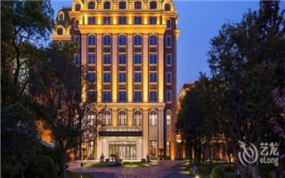
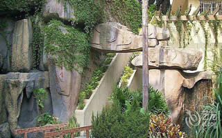
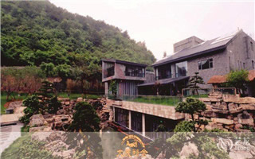

苏州共有1791家酒店

人家尽枕河的苏州，用古典园林的精巧布局展示着这里的美学, 用双面绣的绝活映衬着姑苏人的灵巧。苏州古城和苏州园林把世界文化遗产和世界非物质文化遗产集于一身，在这里，梦苏州。
-

苏州南林饭店
酒店里到处可见的亭台楼阁，让人心旷神怡。特别是在蒙蒙细雨当中，别有一番江南的韵味
-
中青旅东方苏州静思园
典型的园林式酒店，中国风很浓郁，喜欢
-

苏州吴宫泛太平洋酒店
必须强烈推荐了，苏州老城最好的园林五星酒店，很有风格，价格也不贵。
杭州共有3356家酒店
天堂杭州，以西湖闻名。无论雨雪阴晴，无论早霞晚辉，都能变幻成景；春花、秋月、夏荷、冬雪各具美态。醉美西湖、龙井茶香……这一切，都将温婉的江南美景呈现在面前。
-

杭州西溪花间堂
大气的感觉，房间设计细节出众，硬件设施给人超好的体验，早餐品质高，性价比不错
-

罗莱夏朵-杭州湖边邨酒店
新开张的酒店，离西湖超近，是一个民国时期的历史老建筑，很有味道，喜欢！
-

杭州良渚君澜度假酒店
很好，环境优美，而且合适亲子活动，五星级标准一点不差，服务态度好。
扬州共有619家酒店
天下三分明月夜，二分无赖是扬州。在这里，每日享受的是白天皮包水、晚上水包皮的悠闲生活。吃一碗阳春面，逛一圈瘦西湖，走一遍古园林，就会发现自己也会变成半个扬州人。
-
扬州铁道宾馆
酒店位置交通十分方便，环境像园林，闹中取静，干净整洁。离瘦西湖2分钟，下次去还住。
-

扬州涵田汇金度假酒店
三月扬州，春意浓浓，酒店坐落在很幽静的瘦西湖边，酒店内部小花园，细腻可爱。
-
扬州长乐客栈主题文化酒
住在园林之中，感觉很好。尤其是在节假日，这里就成了你的私家园林。
北京共有6964家酒店
北京的皇家园林、私家花园，在国内别具一格、独树一帜。江南风格的园林艺术结合高贵的皇室气息，再配以浓郁的中国风，散发着京城独有的范儿。当酒店融入园林风，又会碰撞怎样的火花？

上海共有4554家酒店
租界里的私家花园、上世纪的古老公园，老上海风情酒店与它们完美交融，特有的海派风格，在这里展示与传承。住上一晚，就好像回到上海滩的十里洋场，华灯起车声响歌舞升平。
-

上海瑞金洲际酒店
历经一个世纪的时光更迭，愈加雍容华美，国际风范。国家领导人和其他的国家政府高层都曾在此下榻。
-

上海四季百果园境庐度假
结庐在人境，而无车马喧。问君何能尔？心远地自偏。采菊东篱下，悠然见南山。
-

上海崇明金茂凯悦酒店
远离都市的喧嚣和污染,品尝新鲜采摘的有机食品,探索身心的世外桃源，诠释无可复制的旅行体验。
南京共有5749家酒店
“江南佳丽地，金陵帝王洲”，南京除了霸气的皇家宫阙，自然也少不了温情的特色小栈。汤山的温泉小院值得你来，秦淮河边的临河旧院期待你来，当然也有更多独具风格的主题酒店等你来探索。
-

南京高淳区花涧堂官溪人
酒店景观很棒，小桥流水、亭台楼阁、曲径通幽、处处呈现浓郁的江南水乡特色。
-
南京高淳区游子休闲山庄
竹翠林茂，三面环山，一面临水，风景异常秀美。
-

南京国际会议大酒店
座落在景色怡人的中山陵景区，毗邻四方城和海底世界，酒店周围景点众多，交通便利。
三亚共有4181家酒店

“三亚位于海南岛的最南端，是中国最南部的热带滨海旅游城市，是中国空气质量最好的城市之一。三亚市别称鹿城，又被称为“东方夏威夷”，拥有全岛最美丽的海滨风光。
-

三亚天通建国酒店(原天通)
离机场及著名景点交通便利。开门即见海的客房、阳台齐备温泉私家泡池。畅游1200平米的超大泳池。
-

三亚明申高尔夫度假酒店
位于风景旖旎的小东海风景区，面朝帆船港游艇码头，拥有专属沙滩，并提供免费巴士，是真正的度假圣地。
-
三亚金凤凰海景酒店
酒店位于椰梦长廊，濒临三亚湾与沙滩、海水、椰林，融为一体，一派迷人的热带海滨风光
厦门共有3817家酒店
“你只道它是座海滨小城，只有大海沙滩如热辣沙滩女郎。不知小城一隅藏着的韵味古厝，园林小院，好似闽南女子小家碧玉待人识。
-

厦门海上花园酒店
环境优雅舒适，干净整洁，服务不错，视野极好！
-

厦门希尔福酒店
拥有大型健康水会的花园公寓式度假酒店，格局以园林形式分区的三座建筑主体，陈设均充满了中式情
-

厦门鼓浪屿林氏府公馆酒
环境不错！很复古的调调！很喜欢！花园也很漂亮！大豪宅！
太原共有2147家酒店
“千年古城，锦绣太原，岁月重新雕琢的古老石窟，中国的面食之都，在各种美食与历史遗迹中领略这座历经沧桑的历史文化名城。
-
山西晋祠宾馆
与全国著名旅游胜地晋祠毗邻，宾馆园林环境融中国传统造园艺术与西方古典造园艺术于一体。
-
太原湖滨国际大酒店(山西)
俯瞰太原迎泽大街街景及迎泽公园湖景色，龙城标志性建筑，也是山西酒店业一颗璀璨之星。
-
山西迎泽宾馆
庭院宽展，环境幽雅，景色秀丽，设施齐备，服务上乘。是休闲消遣、观光旅游、商务洽谈和健身娱乐的
崇左共有174家酒店
“山水园林崇左，突显壮民族特色。崇左山美水美，城在山水中，山水在城中，龙腾湖就是崇左山、水、绿相融的园林设计典范，龙峡山森林公园、东南亚欢乐园、崇左石景林公园、水口湖、广西（崇左）园林园艺博览会等景点
-
广西德天漫心度假酒店
装修古朴，大环境园林风格，安静。紫竹园惬意宁静，木桶特色。
-
大新德天老木棉花乡别墅
中国风，中国画，界河边，非常舒服，有各种各样盛开的鲜花，潺潺的流水。
-
大新明仕千竹园山庄(崇左)
享受大自然的黄昏，山水美景，真的不枉此行。
贵阳共有1787家酒店
“只识苏杭，忘了贵阳，深处贵阳园林，回忆会从内侧温暖你的身体，同时又从内侧剧烈切割你的身体。
-

贵阳大成精舍酒店
强烈推荐，酒店内的环境还是酒店的外部环境都很赞，如果第一来贵阳，值得推荐。
-
大新德天老木棉花乡别墅
特别休闲的好去处，避暑的好地方！
-
贵阳花溪迎宾馆
很有文化底蕴的宾馆，在花溪公园旁边，内部安静，适合休息。国家领导人到贵州视察都住这里！